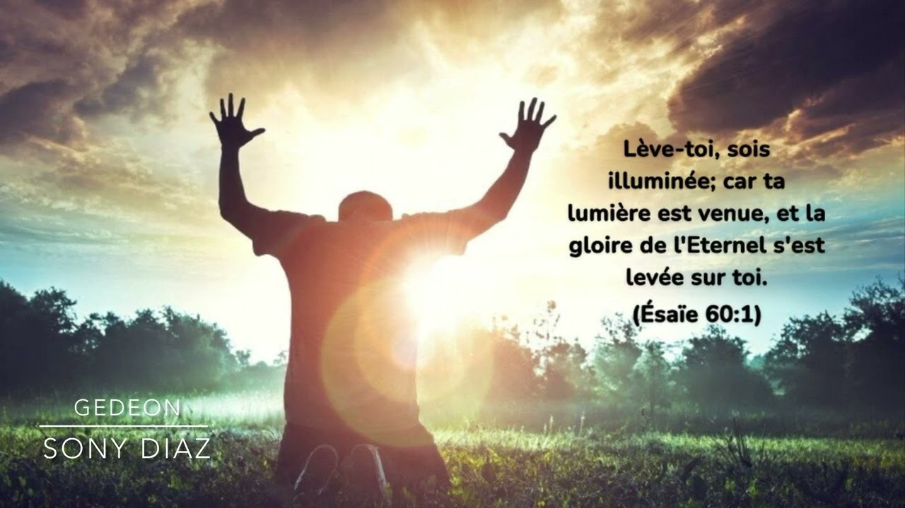

Cantique offert
Gédéon — Sony Diaz
Gédéon (Vaillant héros)

Vidéo officielle sur YouTube · Ouvrir sur YouTube · @Sonydiaz777
Crédits
Ce site est un cadeau de Baptiste à Luigi Jimenez. Il présente l’histoire de Jésus-Christ et permet de lire la Bible en français, accompagné de cantiques.
Le texte proposé est la traduction Louis Segond 1910, entrée dans le domaine public. Les données numériques proviennent du dépôt ouvert midvash/bible-data (version lsg, licence indiquée : public-domain). Cette source note que l’URL d’import d’origine n’a pas été enregistrée, mais le texte de 1910 est bien libre de droits. Une autre édition de référence est disponible chez eBible.org (fraLSG).
La page « Son histoire » est un texte original, rédigé pour ce site. Il s’appuie sur les récits des Évangiles et des Actes, sans copier un ouvrage protégé. Les citations bibliques renvoient à la Louis Segond 1910.
Le lecteur en bas de l’écran ne se lance jamais automatiquement. Les enregistrements ci-dessous sont dans le domaine public ou sous licence libre, et les fichiers sont conservés dans le site. Ils ont été recompressés en MP3 (128 kb/s) pour un chargement plus léger, sans modification musicale autre que ce transcodage.
Sony Diaz — Gédéon (Vaillant héros) est une œuvre protégée. Elle n’est ni téléchargée ni hébergée ici. On peut l’écouter dans le panneau « Cantiques modernes » du lecteur, via un lecteur YouTube youtube-nocookie pointant vers la vidéo officielle publiée sur la chaîne @Sonydiaz777 (titre exact : Sony - Gedeon (Vaillant héros)). La lecture YouTube ne démarre pas toute seule.
Les polices Cormorant Garamond (Catharsis Fonts / Christian Thalmann) et Source Sans 3 (Adobe, Paul D. Hunt) sont hébergées localement, sous licence SIL Open Font License 1.1.
La dernière position de lecture, le thème, la taille du texte et le volume sont mémorisés dans ton navigateur (localStorage). Rien n’est envoyé à un serveur. L’ouverture du panneau « Cantiques modernes » charge un lecteur YouTube, soumis alors aux règles de Google / YouTube.